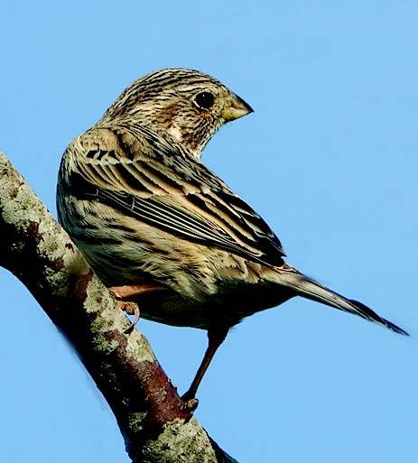

Østerådalen Syd

The wet meadows in particular attract many birds to the area -both breeding birds as well as migratory and winter visitors.

By the river you can experience the water star, our only diving sparrow, and if you are very lucky, you can get a quick glimpse of that shy kingfisher.

In the meadows west of Dall Villaby there is a large population of it beautiful orchid - flesh-colored cuckoo grass. At Finstrupgård Kildevæld there is a very special plant life that is connected to the spring natural conditions, i.a. watercress, where the leaves can be used as edible herb.